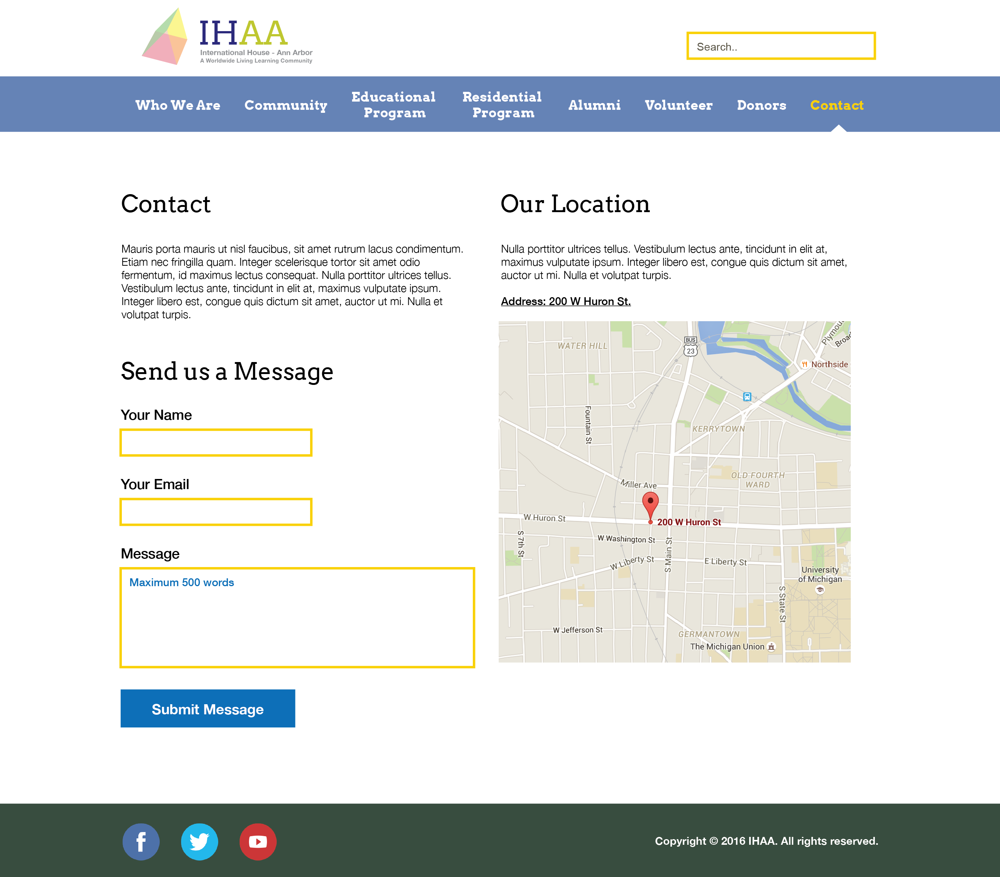

Graphic Design Pieces
Course Project of SI 520 Graphic Design
Copyright is held by the owner/author(s).
Twitter Theme for Arboretum
Designing Twitter themes for Nichols Arboretum throughout 4 seasons of a year.
Images created by Jeseok Lee.
Background pictures collected from Google Image. Adobe Photoshop.
Alphabet Poster of Super Mario Bros.
Typeface and Topic Decision
Font name: Press Start 2P
Press Start 2P is a bitmap font based on the font design from 1980s Namco arcade games. Although the design of uppercase letters and digits dates back to Atari's "Sprint" (1977), the speci c glyph forms in this TrueType conversion are based on those from "Return of Ishtar" (1986), one of the rst games to include and regularly use lowercase as well as uppercase letters in its screen font.
Unlike the original font from the "Return of Ishtar" ROM, Press Start 2P includes a wide variety of non- ASCII Unicode characters for pan-European use, including Greek and Cyrillic. It could be expanded to support other scripts. This font is designed by CodeMan38, and it is one of Google’s web fonts.
This assignment is about the typography, but it is also about the grid. I considered which font is the most royal to the grid, then I came up with the several monospaced fonts. Then I realized that the fonts designed with the dots in the past are unavoidably dependent to the grid because they used pixel to design the font.
After choosing the typeface, I could easily choose the topic - 8 bit games. I choose Super Mario because many people can reminisce about the past with this font and the game represents the golden era of video game kids.
Images created by Jeseok Lee.
Adobe Illustrator, Adobe Photoshop.
Logo Design for International House Ann Arbor
Images created by Jeseok Lee.
Adobe Illustrator, Adobe Photoshop.
Home page Design for International House Ann Arbor

Images created by Jeseok Lee.
Adobe Illustrator, Adobe Photoshop.